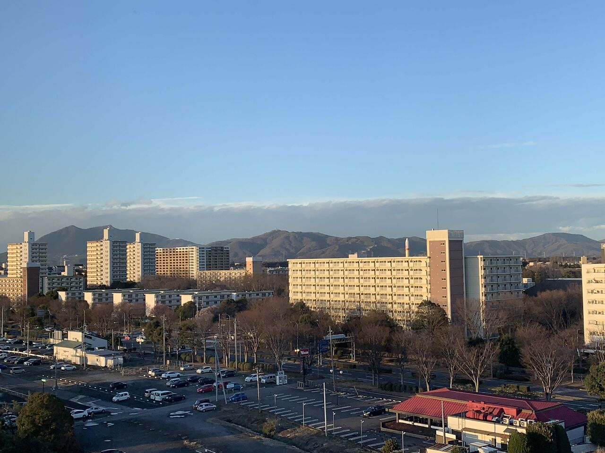
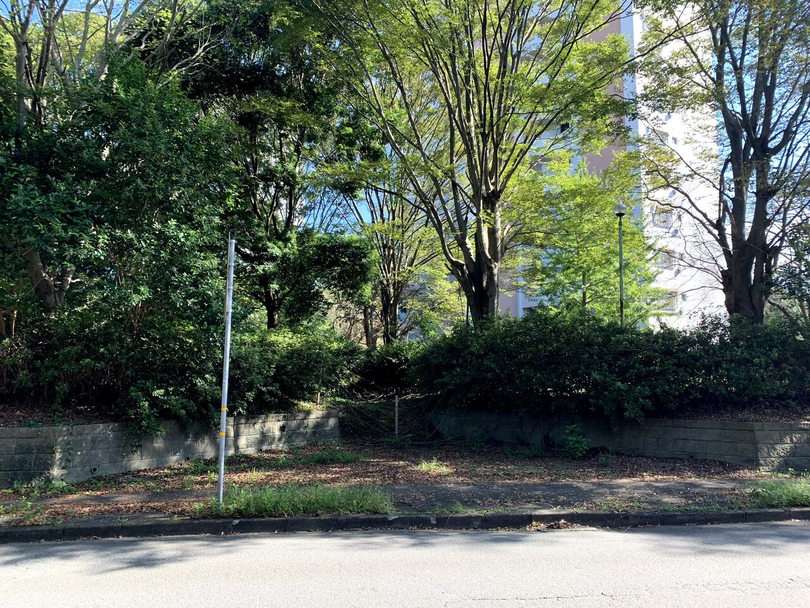
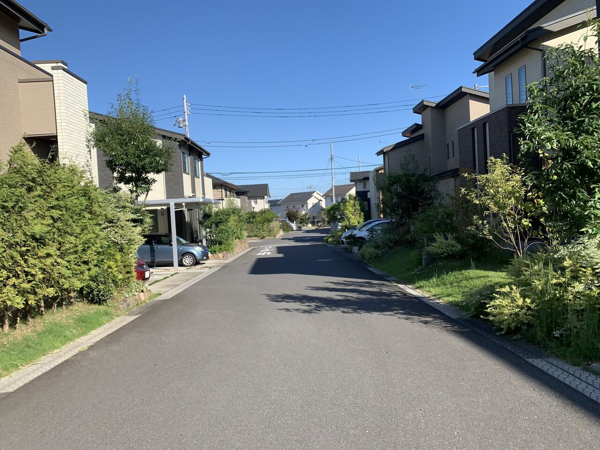
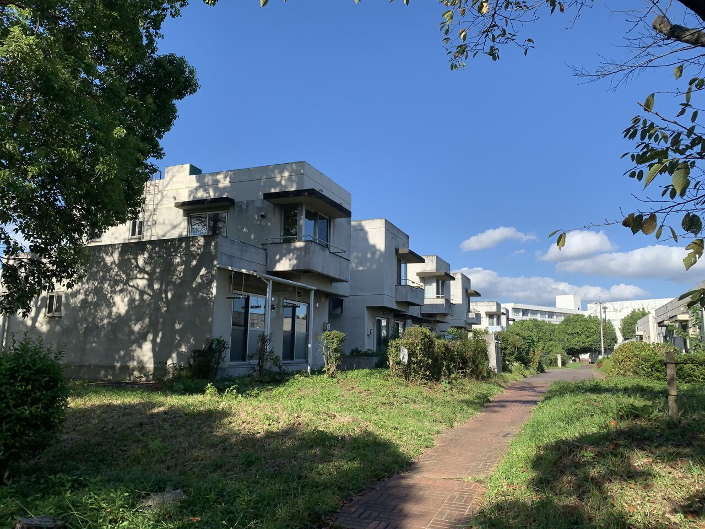
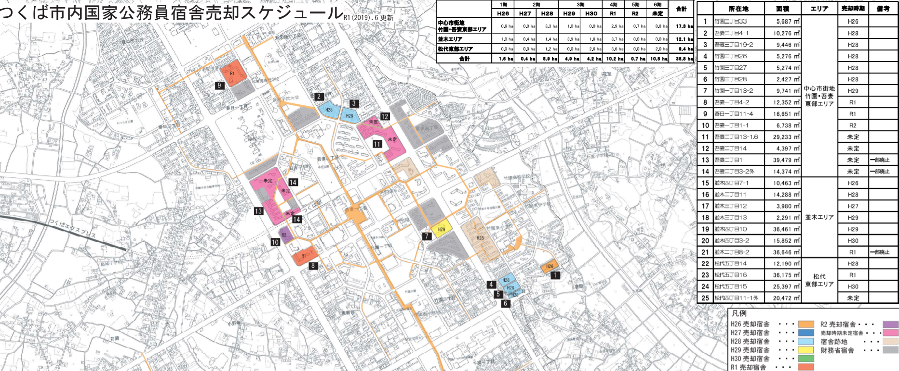

はじめに
つくば市の特徴として一番に挙げられるのが計画都市であることだと思います。
今のつくば市である筑波研究学園都市は1960年代から計画的に建設され、多数の研究所が立地しています。
また、今は独立行政法人である研究所もかつては国の一機関であったため、研究所に勤める人々は公務員でした。そのため、学園都市にはつくばに住み研究所に勤める人々のための住居＝公務員宿舎も建設されました。
そこで、つくばの特徴でもある公務員宿舎の現状についてゆる～く書いていこうと思います。
↑筆者が受験で泊まったホテルから撮った筑波山方面のつくばセンター付近の街並みです。
「つくばって結構マンションが建ってて栄えているんだな～」と思っていました。この時は。
現状
現地(写真左の高層マンション付近)に行ってみるとこのように柵が設けられ立ち入り禁止となっていました。
つくば駅から歩いて5分のところなのに、人通りもなく、緑が生い茂っていて不気味でした。
別の地区に移動します。
↑これは竹園地区のかつて公務員宿舎だった所に作られた住宅街です。整然としていますね。
↑近くに残っている公務員宿舎です。デザインは無機質ですね。コンクリートがむきだしで夏場はかなり暑いんじゃないかと思います。ただ住宅の前の道が広いのは良いのではないでしょうか。
↑公務員宿舎売却スケジュール(つくば市HPより)です。平成20年代後半から多くの地区が売却されていることが分かります。一方で吾妻地区(つくば駅の北側)は未定の場所が目立ちます。
どうしてこうなった
①長く持たせる設計でなかったのではないか
建設当時は高度成長が終わったとはいえ維持管理を気にしていなかったのではないでしょうか。
②つくばで民間業者が住宅を十分に供給できるほど街が発展した
TX開通もあったので、つくば駅、研究学園駅周辺には多くのマンションや一戸建て住宅がありますよね。
③新規開発する際には開発業者が既存建物の解体費用を負担しないといけない
つくば駅に近くても解体費用がかかるなら別の空き地を開発しよう!となりかねません。
まとめ
つくば駅前には公務員宿舎跡地を利用したマンションが多数あり、現在も新たに建設されています。しかし、せっかくつくばに住むなら緑豊かでゆとりのある一軒家に住みたいですよね。公務員宿舎を保有しているのが関東財務局なのでつくば市としてはどうしようもない、業者に開発してもらうしかないのかもしれませんが、住宅需要にも限りがあるので新たな利用方法を考え直す必要があるのではないでしょうか。